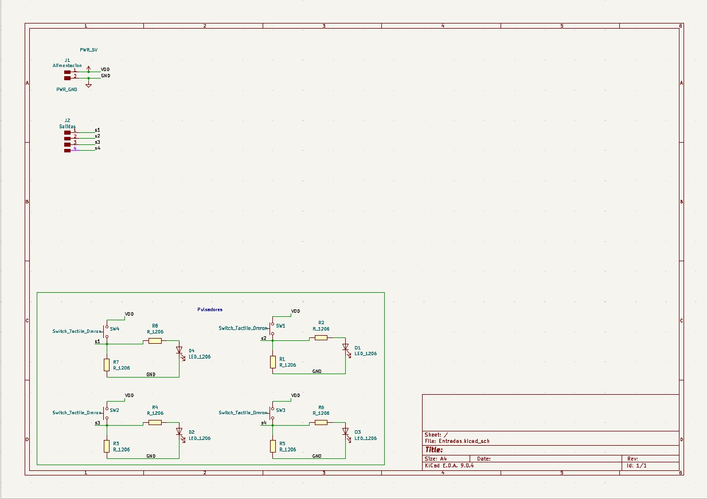
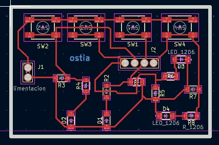
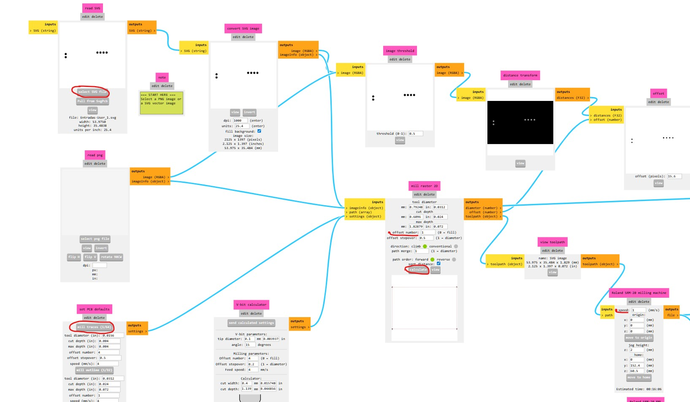
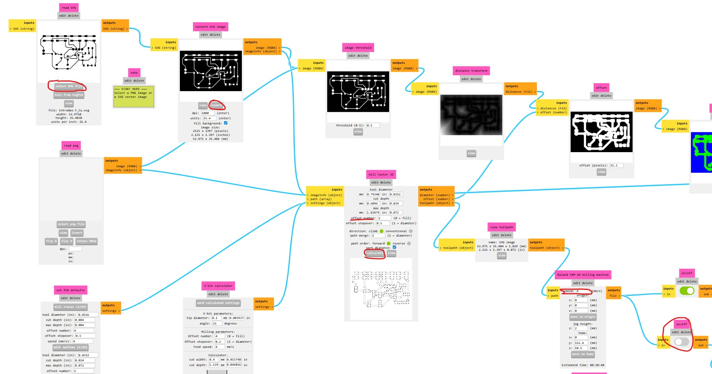
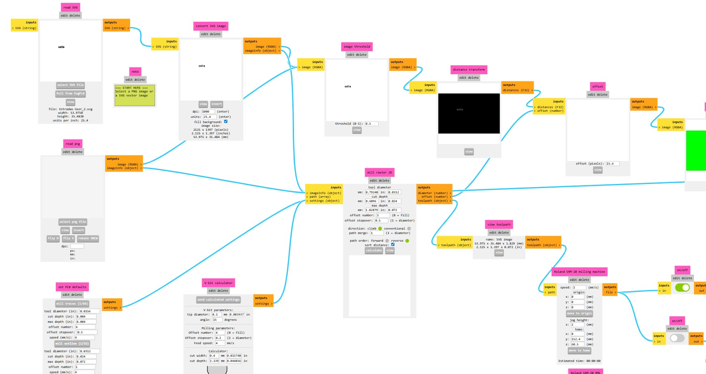
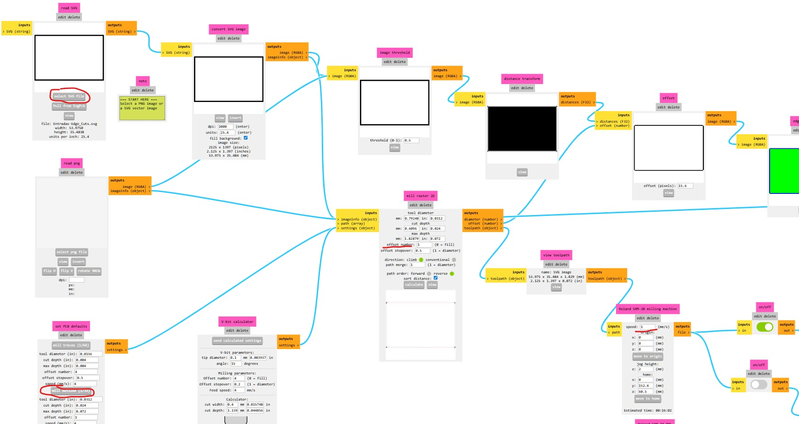
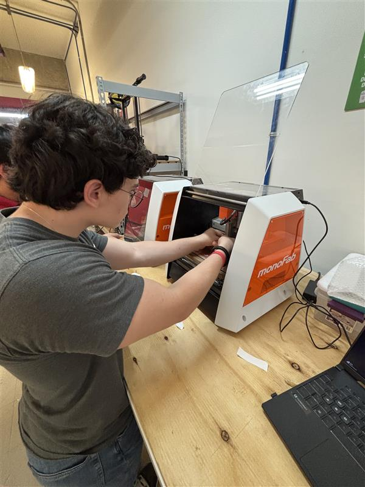
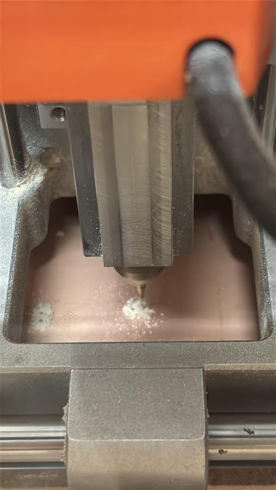
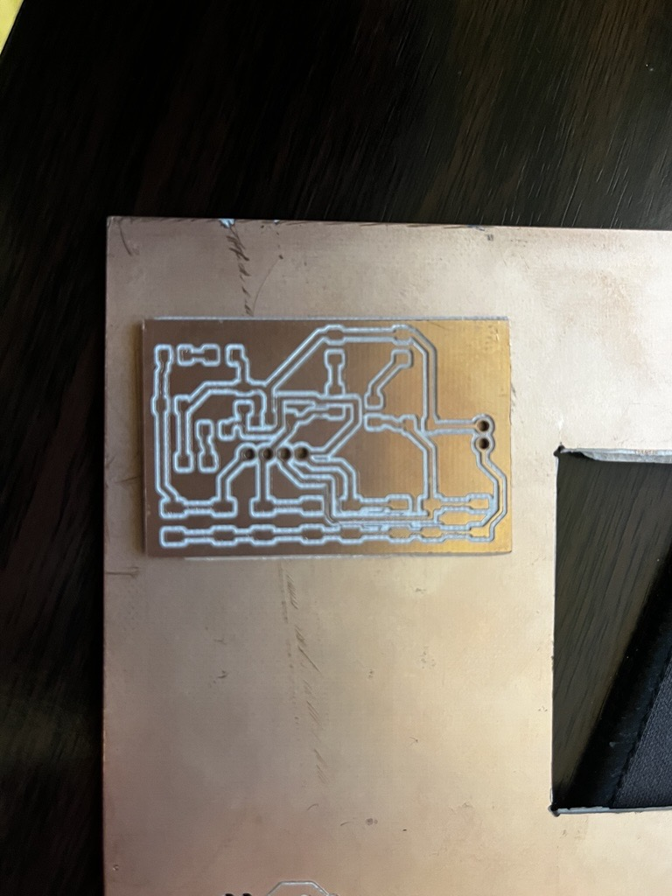

📚 Página WEB
Plantilla genérica para documentar proyectos académicos o de ingeniería.
Copia y adapta las secciones según tu necesidad.
1) Resumen
- Nombre del proyecto: PBC con MonoFab
- Equipo / Autor(es): Solórzano Herrera Sebastian y Bermudez Ruiz Uriel Onairam
- Curso / Asignatura: Electrónica Digital
- Fecha: 18/09/2025
- Descripción breve: Realizamos una PCB con una placa fenolica, utilizando la MonoFab y el modelaje el Kikad.
Consejo
Mantén este resumen corto (máx. 5 líneas). Lo demás va en secciones específicas.
2) Objetivos
- General: Diseñar una PBC utilizando la MonoFab.
- Específicos:
- Aprender los recursos básicos de Kikad para el diseño y la construcción.
- Aprender el software de la MonoFab.
- Aprender a utilizar la MonoFab con los métodos prácticos necesarios.
3) Kikad: Esquemático y Diseño de la PBC

- Esquemático: El esquemático de la PBC cuenta con 4 diferentes módulos de pulsadores, estos están compuestos de 1 pulsador Switch_Tactile_Dmor, 2 resistencias R_1206 y un led LED_1206. Todo esto esta alimentado con un voltaje menor a 5 volts y tiene 4 salidas.

- Diseño de la PBC: Para la realización del diseño de la PBC, utilizamos un diseño de 53mm x 33 esto para que no nos hiciera falta espacio, ni tampoco sobraba demás. Utilizamos unas pistas de línea de 0,4mm y un contorno de 1mm. Utilizamos 4 capas, las cuales se divien en:
- F.Cu Pistas:
- Aquí colocamos las pistas en donde se hará el trazado a 0.4mm.
- Edge.Cuts Borde:
- Aquí colocamos el borde en donde cortaremos la placa con un grueso de 1mm.
- User.1 Perforaciones:
- Aquí colocamos las perforaciones que se harán en nuestra placa para colocar fuestras entradas y salidas.
- User.2 Estampados
- Aquí colocamos los grabados extras que le darán la estética a nuestra placa.
4) Uso de Mods
Perforaciones: - Para la configuración de la maquina es necesario iniciar con las perforaciones, ya que son las más rápidas durante este proceso.Para la configuración de este proceso es necesario cargar el archivo descargado y colocar los valores estandar de la PCB mill traces (1/64) y colocar un offset de 1, con una velocidad de 4mm/s.

Pistas: - Para la creación de pistas es necesario invertir el diseño, seleccionar un offset de 2 y una velocidad de 4mm/s. Para descargar los archivos, es necesario encender el output y calcular el diseño.

Estampados: - Para poder generar un grabado es necesario descargar un png de una imagen vectorial o diseñar una, esta te permite colocarla directamente en el KiKad para crear un nuevo borde o hacer un grabado dentro la placa para conocer las entradas o salidas, etc.

Borde: - Para generar el borde es necesario cambiar la configuración de la PBC a los valores originales. Además de modifiacar el offset a 1 para que no demasiadas trazos y que tenga una velocidad moderada de 1mm/s. _

5) Instalación


